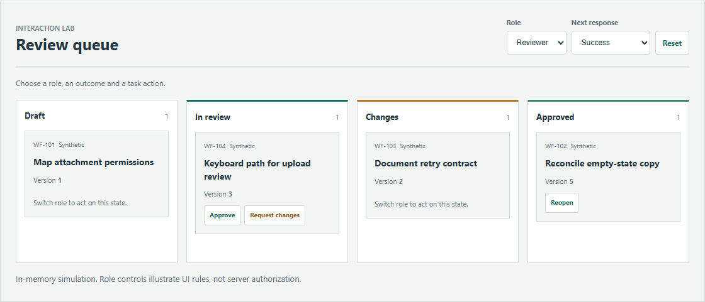
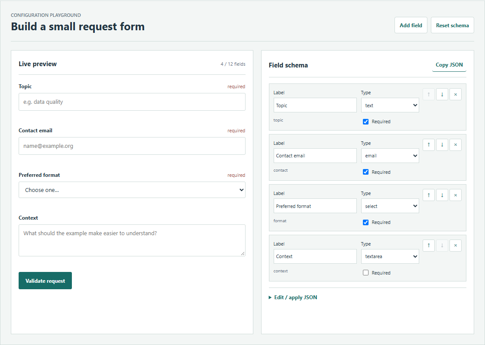

REACT · TYPESCRIPT · STATE
React Workflow Board
Run a real React app: switch roles, submit synthetic tasks, retry simulated network failures and recover from version conflicts.
DATA · ENGINEERING · EVALUATION
Eight interactive demos: engineering workflows, React, configurable forms, a virtual presenter and data experiments. Start with a sample, inspect the failure path and read the implementation notes.

REACT · TYPESCRIPT · STATE
Run a real React app: switch roles, submit synthetic tasks, retry simulated network failures and recover from version conflicts.

LOW-CODE · SCHEMA · VALIDATION
Configure six field types, reorder controls, check and apply JSON, and inspect accessible validation messages. A small application schema, with explicit limits.

01 / FINANCIAL ANALYSIS
Two years, 24 fictional companies, KMeans and PCA. Cluster labels have no risk-ranking meaning.

02 / DATA QUALITY
Four scenarios, explicit missing-value and conflict policies, retained rows and quarantine reasons.

03 / MODEL EVALUATION
Fixed synthetic scores, threshold exploration, ROC / PR and prediction-level ensembles. No model is trained.

06 / AI PRESENTATION
Play chapters, switch gestures and read bilingual captions in a deterministic presenter demo built from the local component.

07 / ENGINEERING WORKFLOW
Choose a machine, scan a demo batch and submit a quantity. Inspect progress, retry a failed request and see the confirmed record.

08 / ENGINEERING WORKFLOW
Try new install, suspension or relocation. Review the order, trigger a duplicate conflict and resolve it before submitting again.
These demonstrations are learning artifacts, not deployed business systems or research performance results. Source data from private local projects is excluded. The reading map documents dependencies, attribution and reproduction.